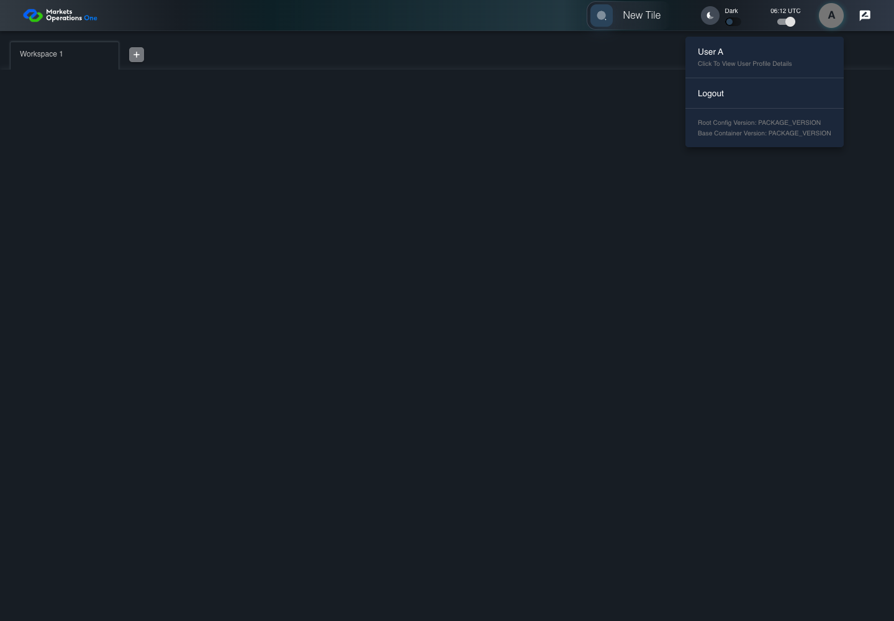

UX-050 profile or catalog resilience
PASS · application/run-050/ux-050-profile-or-catalog-resilience-5fe48ea37856-attempt-1 · ACTUAL_APPLICATION_LOCAL_SERVICES
Actual React shell. Controlled catalog, user identity, photo failures, and SystemJS tenant. Chromium only. Accessibility and layout outcomes are proposed probes; no approved conformance standard is inferred.
2026-10-22T06:12:00.090Z to 2026-10-22T06:12:02.417Z
Assertions and result · Artifact manifest · Exact run inputs and source hashes
Result SHA-256:1b4947a20722fbadb4331e6fe01e0a2dcd52638461a7fba8e06abc5a0df8f38fScreenshot capture: CAPTURED. Named frames: 7.
Step screenshot evidence: COMPLETE. 6/6 canonical steps have execution screenshots.
Canonical step timeline
Given USER-A has fullName "User A", oud userId "USER-A", and a photo response of HTTP404
Execution: PASSED.
1. step-01 Visible state after step 1: Given USER-A has fullName "User A", oud userId "USER-A", and a photo response of HTTP404
2026-10-22T06:12:01.482Z · 1440×1000
Step: /Users/lushevol/code/github/ratan-release-impact/workbench/tasks/ui-test-coverage-20261022/test-cases.md:13852
SHA-256:b0d8bd3f9faf25b9831e8e67fc0e92f9f9cff7591bb746b16bfcb116162ff137When USER-A clicks the icon button with test ID "${MFE_APP_PREFIX_STYLE}_avatar_IconButton" on the Home page
Execution: PASSED.
2. step-02 Visible state after step 2: When USER-A clicks the icon button with test ID "${MFE_APP_PREFIX_STYLE}_avatar_IconButton" on the Home page
2026-10-22T06:12:01.617Z · 1440×1000
Step: /Users/lushevol/code/github/ratan-release-impact/workbench/tasks/ui-test-coverage-20261022/test-cases.md:13853
SHA-256:fdaa124241b3d7a09db6fd906c0fa8667c95b47b113aac8555b5b2b518ab6623And USER-A clicks the menu item with test ID "${MFE_APP_PREFIX_STYLE}_avatar_Profile" in the menu with identifier "menu-appbar-avatar" on the Home page
Execution: PASSED.
3. step-03 Visible state after step 3: And USER-A clicks the menu item with test ID "${MFE_APP_PREFIX_STYLE}_avatar_Profile" in the menu with identifier "menu-appbar-avatar" on the Home page
2026-10-22T06:12:01.765Z · 1440×1000
Step: /Users/lushevol/code/github/ratan-release-impact/workbench/tasks/ui-test-coverage-20261022/test-cases.md:13854
SHA-256:c632d12b07bd58c78cb5793ed54e242c6115472d4fe92ec069eae56b67aa2996Then The profile identity text contains "User A" and "USER-A"
Execution: PASSED.
4. step-04 Visible state after step 4: Then The profile identity text contains "User A" and "USER-A"
2026-10-22T06:12:01.849Z · 1440×1000
Step: /Users/lushevol/code/github/ratan-release-impact/workbench/tasks/ui-test-coverage-20261022/test-cases.md:13855
SHA-256:c632d12b07bd58c78cb5793ed54e242c6115472d4fe92ec069eae56b67aa2996And The dialog labelled "User Profile" on the Home page is visible
Execution: PASSED.5. step-05 Visible state after step 5: And The dialog labelled "User Profile" on the Home page is visible
2026-10-22T06:12:01.893Z · 1440×1000
Step: /Users/lushevol/code/github/ratan-release-impact/workbench/tasks/ui-test-coverage-20261022/test-cases.md:13856
SHA-256:c632d12b07bd58c78cb5793ed54e242c6115472d4fe92ec069eae56b67aa2996And The tile error panel is absent from the profile content
Execution: PASSED.
6. step-06 Visible state after step 6: And The tile error panel is absent from the profile content
2026-10-22T06:12:01.943Z · 1440×1000
Step: /Users/lushevol/code/github/ratan-release-impact/workbench/tasks/ui-test-coverage-20261022/test-cases.md:13857
SHA-256:c632d12b07bd58c78cb5793ed54e242c6115472d4fe92ec069eae56b67aa2996
Additional named frames
Screenshots establish visible state only. Assertions and traces support functional claims.